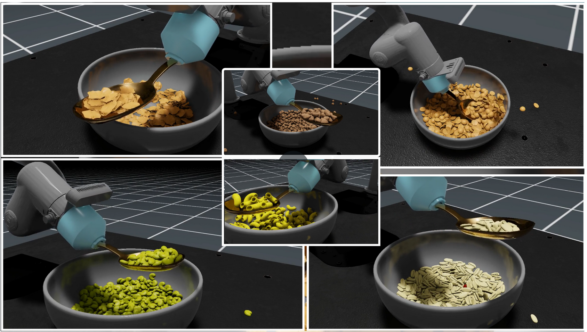
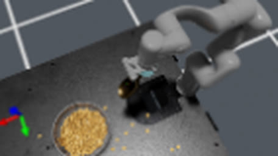
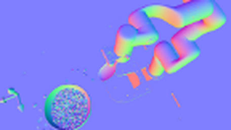
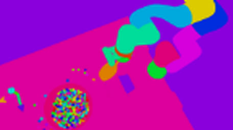
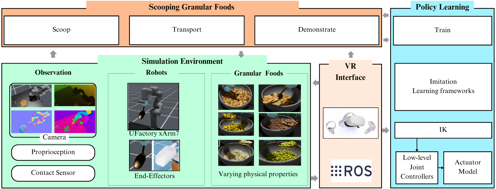

Virtual reality
The operator demonstrates the task directly in the simulated 3D scene.
- demonstrations
- 120
- per training food
- 30
- minutes of data
- ≈40
IEEE/RSJ IROS 2025
Learning robotic granular food manipulation
from virtual reality demonstrations
An imitation-learning framework for robot-assisted feeding
Project film
A narrated walkthrough of the simulator, the VR demonstrations, the learning methods, and what the experiments found.
Grains slide. Peas roll. Beans interlock.
Robot-assisted feeding helps people with disabilities or motor impairments eat. Granular foods such as rice and beans are hard to scoop because of their dynamic physical properties. VERAGMIL is a simulation and data-collection framework for teaching robots to scoop and transport them. It combines GPU-accelerated physics with a virtual reality interface so a person can demonstrate the task directly in 3D.
The study compares policies trained from VR and 3D space-mouse demonstrations using Behavioral Cloning (BC), recurrent Behavioral Cloning (BC-RNN), and Batch-Constrained Q-learning (BCQ). Performance is evaluated through task success, spillage, completion time, and generalization to unseen food items.
01Simulate
Granular foods with varied shapes and physical properties are modeled in NVIDIA Isaac Sim and Isaac Lab, and scooped by a robot arm holding a spoon.

02Demonstrate
An operator records scooping and transport trajectories directly in 3D. A 3D space mouse provides the comparison condition.
The operator demonstrates the task directly in the simulated 3D scene.
A desktop 3D input device, recorded as the comparison condition.
03Learn
BC, BC-RNN and BCQ policies are trained on each interface’s demonstrations, then tested against a human-expert baseline and on foods not seen during training.




04Evaluate
BC, BC-RNN and BCQ, benchmarked against a human expert.
VR vs. 3D space mouse, on training foods and foods never seen in training.
05Results
Policies learned from VR demonstrations consistently achieved higher success rates than policies trained from 3D space-mouse demonstrations. BCQ performed best overall and generalized most strongly to unseen foods.
Task success rate (%), averaged over all foods
Best learned policy
80%
BCQ trained on VR demonstrations, vs. 68% with 3D space-mouse demonstrations.
Spillage with BCQ
Average pieces spilled per trial (Table III)
| Material | BC | BC-RNN | BCQ | Human | ||||
|---|---|---|---|---|---|---|---|---|
| VRI | 3DM | VRI | 3DM | VRI | 3DM | VRI | 3DM | |
| Training materials | ||||||||
| Rice | 82 | 65 | 90 | 75 | 93 | 85 | 97 | 91 |
| Buckwheat | 80 | 60 | 88 | 72 | 91 | 80 | 95 | 88 |
| Barley | 78 | 58 | 85 | 70 | 89 | 78 | 96 | 90 |
| Pasta | 65 | 45 | 75 | 60 | 80 | 70 | 90 | 85 |
| Unseen materials | ||||||||
| Peas | 55 | 40 | 65 | 50 | 75 | 65 | — | — |
| Beans | 50 | 38 | 60 | 48 | 70 | 60 | — | — |
| Flakes | 35 | 20 | 50 | 30 | 60 | 40 | — | — |
| All materials (avg.) | 64 | 47 | 73 | 58 | 80 | 68 | 95 | 89 |
Built to scale
Multiple simulated robots run concurrently for parallel policy training and evaluation.
Paper
VERAGMIL: Virtual Environment for Scooping Granular Foods with Imitation Learning Models
Robot-Assisted Feeding (RAF) systems are essential for assisting individuals with disabilities or motor impairments in eating tasks. Manipulating granular food items, such as rice and beans, poses significant challenges due to their dynamic physical properties. Learning from human demonstrations offers a promising solution, but acquiring high-quality demonstrations is complex. VERAGMIL combines a high-fidelity simulator with an intuitive VR interface for recording demonstrations and supporting different imitation learning methods. Experiments compare BC, BC-RNN, and BCQ on scooping and transport tasks using VR and 3D space-mouse demonstrations. Results show that VR-based demonstrations lead to stronger policies, with BCQ performing best overall, especially in reducing spillage and approaching human performance.
Cite
@inproceedings{ergogo2025veragmil,
author = {Ergogo, Amanuel and Dall'Alba, Diego and Korzeniowski, Przemyslaw},
title = {VERAGMIL: Virtual Environment for Scooping Granular Foods with Imitation Learning Models},
booktitle = {2025 IEEE/RSJ International Conference on Intelligent Robots and Systems (IROS)},
year = {2025},
pages = {13075--13082},
doi = {10.1109/IROS60139.2025.11247362}
}